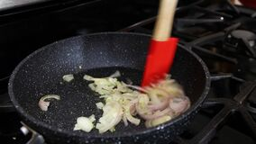
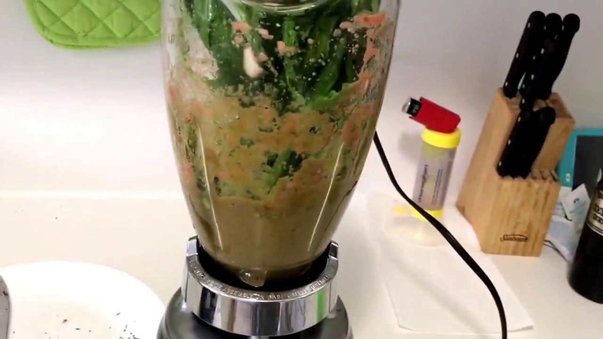
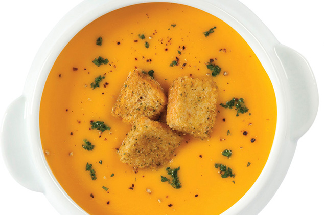

| Preparaciòn Paso a paso |
|---|
Paso 1: Cocinar la pechuga con la zanahoria, la mitad del tallo de apio y un diente de ajo, sal al gusto

Paso 2: En una sartén engrasada sofreír la cebolla con el pimentón, el tallo de apio y el ajo y agregar sal y especias al gusto.
Paso 3: Licuar el caldo obtenido de la primera cocción con la mitad de la pechuga, la zanahoria y los demás ingredientes sofreídos anteriormente, añadir la crema de leche hasta que todo esté completamente procesado.
Paso 4:Servir con la pechuga de pollo desmechada, los crotones y las hojas de albahaca
AyudaVideo De referencia